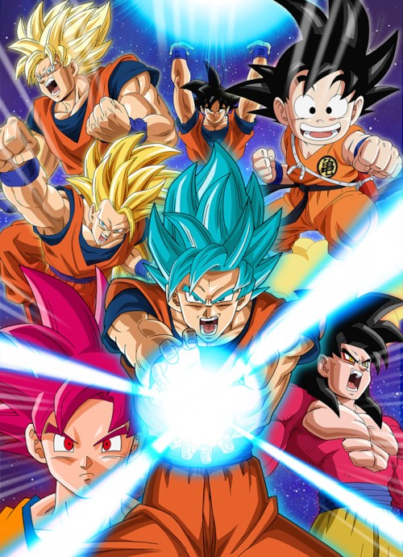

- 손오공
- 손오반
- 손오천
- 피콜로
손오공

드래곤볼의 주인공이자 소년 만화를 대표하는 캐릭터
드래곤볼의 주인공으로 이름의 유래와 모티브는 역시 서유기의
주인공 손오공이다. 사이어인으로서의 본명은 카카로트(Kakarrot, カカロット)다.
당근(Carrot)에서 유래되었다. 일본어로는 손오공의 일본어 음독인 '손고쿠',
영어권에서도 SONGOKU로 표기되지만[9] 국내에서는 '손오공'으로 읽히고 있다.
중국어권은 'SūnWùkōng'[10]이라 읽힌다.